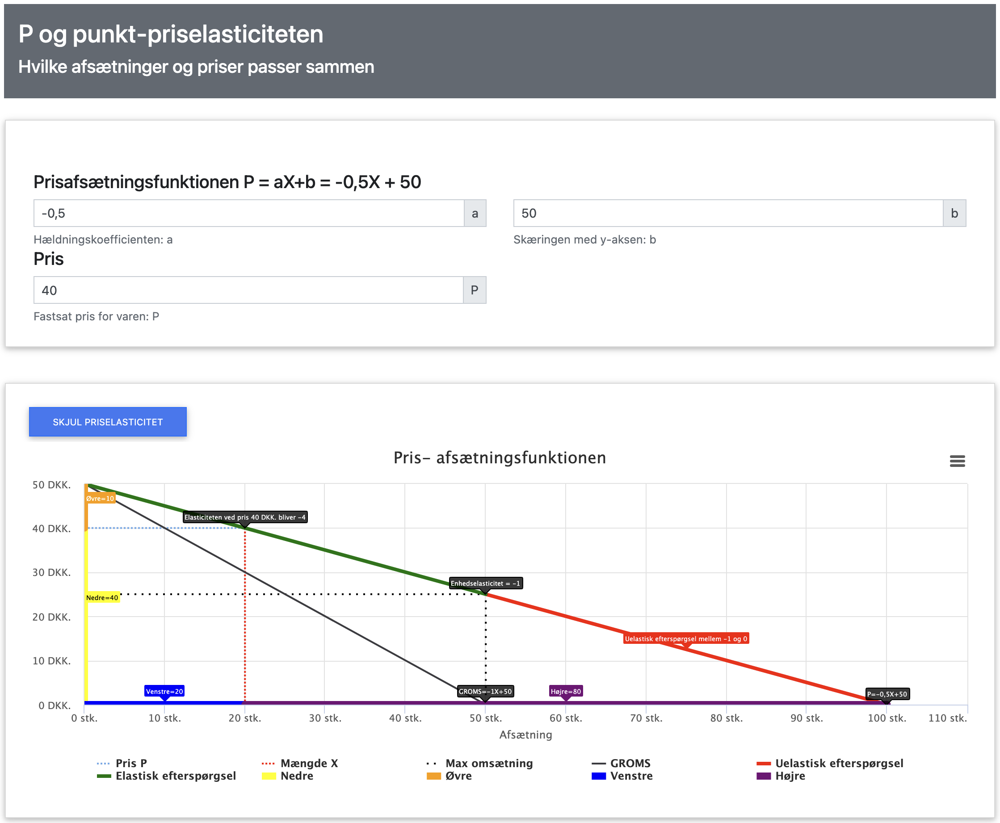
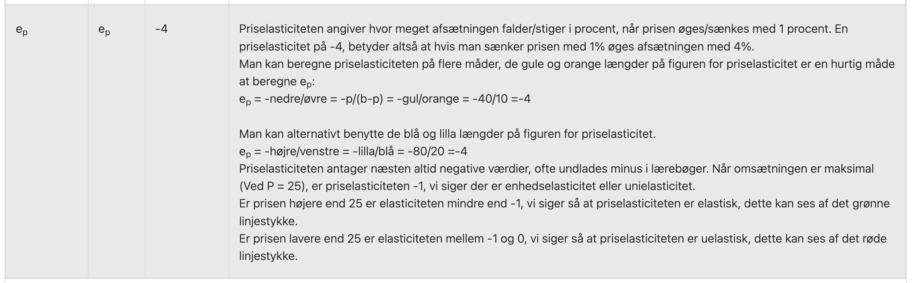

Elasticitet
Priselasticitet
Priselasticitet er et tal, der fortæller os, hvor meget salget af et produkt ændrer sig, når vi ændrer prisen. Det hjælper virksomheder med at forstå:
- Hvor følsomme kunderne er over for prisændringer - Vil de stadig købe produktet, hvis prisen stiger?
- Om det kan betale sig at sætte prisen op eller ned - Hvad giver den højeste omsætning?
- Hvordan forskellige produkttyper reagerer forskelligt på prisændringer - Nødvendige varer vs. luksusvarer
Priselasticiteten måler, hvor følsom efterspørgslen er over for prisændringer. Den beregnes som:
ε = -(ΔX/X) / (ΔP/P)
hvor:
- ε er priselasticiteten (altid negativ, da prisstigninger altid leder til fald i afsætningen)
- ΔX er ændringen i afsætning (hvor mange flere eller færre enheder vi sælger)
- X er den oprindelige afsætning (hvor mange enheder vi solgte før prisændringen)
- ΔP er ændringen i pris (hvor meget prisen stiger eller falder)
- P er den oprindelige pris (hvad prisen var før ændringen)
Forklaret med ord: Priselasticiteten fortæller os, hvor mange procent afsætningen ændrer sig, når prisen ændres med 1%.
Eksempel med is:
Lad os se på en isbod, hvor:
- Ved ε = -2: 1% prisstigning giver 2% fald i afsætningen (2 × 1% = 2%)
- Ved ε = -1: 1% prisstigning giver 1% fald i afsætningen (1 × 1% = 1%)
- Ved ε = -0,5: 1% prisstigning giver 0,5% fald i afsætningen (0,5 × 1% = 0,5%)
Dette betyder at:
- Ved ε = -2 er efterspørgslen elastisk - en 1% prisstigning giver et 2% fald i afsætningen
- Ved ε = -1 er efterspørgslen enhedselastisk, eller neutralelastisk - en 1% prisstigning giver et 1% fald i afsætningen
- Ved ε = -0,5 er efterspørgslen uelastisk - en 1% prisstigning giver kun et 0,5% fald i afsætningen
Eksempel isboden app
Du kan hente appen til at beregne priselasticiteten for en given pris og afsætning herunder:
App til prisafsætningsfunktion
Hvis vi har samme prisafsætningsfunktion for isboden for hver time, a = -0,5 og b = 50 i appen, for at se priselasticiteten for en given pris og afsætning, indsættes pris P ovenfor er denne sat til 40 kr.
Husk at klikke på "VIS PRISELASTICITET" for at se priselasticiteten.
Ved en pris på 40 kr. er afsætningen 20 is.
Ved en pris på 40 kr. er priselasticiteten -4, hvilket betyder at en 1% prisstigning giver et 4% fald i afsætningen, eller omvendt en 1% prisfald giver et 4% stigning i afsætningen.
Det vil sige at hvis prisen stiger med 1% til 44 kr., vil afsætningen ca. falde 4% fra 20 til 19,2 eller ca. 19 is, vil betyde omsætningen vil falde.
(vi sælger jo ikke halve is, så ændringerne er omtrentlige).
Hvis prisen sænkes med 1% til 36 kr., vil afsætningen stige 4% til 20,8 eller ca. 21 is, hvilket vil betyde at omsætningen vil stige.
Man kan hurtigt bestemme ved hvilken pris der er enhedselasticitet dvs ε = -1.
For en lineær prisafsætningsfunktion P = a - bX er der enhedselasticitet ved prisen P = b/2 = 50/2 = 25 kr.
Ved prisen b/2 = 25 kr. er efterspørgslen enhedselastisk dvs. ε = -1, det er også ved denne pris at omsætningen er maksimal.
På figuren ovenfor er prisafsætningsfunktionen farvet grøn når prisen er over 25 kr. her er efterspørgslen elastisk dvs. ε < -1.
På figuren ovenfor er prisafsætningsfunktionen farvet rød når prisen er under 25 kr. her er efterspørgslen uelastisk dvs. 0 > ε > -1.
Man kan i appen også se hvordan man udregner priselasticiteten for en given pris f.eks. 40 kr. formlen er:
ε = -P/(b-P) = nedre/øvre = gul/orange = -40/(50-40) = -40/10 = -4
Dette er også vist i appen under figurerne nederst i skemaet - husk at klikke på "VIS PRISELASTICITET" for at se priselasticiteten:

| Priselasticitet | Betydning | Eksempler |
|---|---|---|
| ε < -1 | Elastisk efterspørgsel - en 1% prisstigning giver mere end 1% fald i afsætningen. Ved elastisk efterspørgsel vil en prisstigning føre til faldende omsætning, mens en prisreduktion vil øge omsætningen. |
|
| 0 > ε > -1 | Uelastisk efterspørgsel - en 1% prisstigning giver mindre end 1% fald i afsætningen. Ved uelastisk efterspørgsel vil en prisstigning føre til stigende omsætning, mens en prisreduktion vil reducere omsætningen. |
|
| ε = -1 | Enhedselastisk efterspørgsel - en 1% prisstigning giver præcis 1% fald i afsætningen. Ved denne elasticitet vil omsætningen være uændret uanset prisændring, da ændring i pris og mængde udligner hinanden præcist. Dette er punktet hvor omsætningen er maksimal. |
|
Priselasticitet i Praksis - Eksempler fra Virkelige Virksomheder
| Virksomhed | Produkt | Priselasticitet | Prisændring | Effekt på Afsætning | Effekt på Omsætning | Forklaring |
|---|---|---|---|---|---|---|
| Netflix | Premium Abonnement | -0,4 | +12,5% | -5% | Omsætning stiger | Uelastisk efterspørgsel (0 > ε > -1): -0,4 × 12,5% = -5% (fald i afsætning). Prisstigningen på 12,5% giver kun 5% fald i afsætningen, hvilket resulterer i øget omsætning |
| Spotify | Student Abonnement | -2,5 | -29% | +72,5% | Omsætning stiger | Elastisk efterspørgsel (ε < -1): -2,5 × -29%=+72,5% (stigning i afsætning). Prisreduktionen på 29% giver 72,5% stigning i afsætningen, hvilket resulterer i øget omsætning |
| Apple | iPhone 15 Pro | -0,3 | +8,3% | -2,5% | Omsætning stiger | Uelastisk efterspørgsel (0 > ε > -1): -0,3 × 8,3% = -2,5% (fald i afsætning). Prisstigningen på 8,3% giver kun 2,5% fald i afsætningen, hvilket resulterer i øget omsætning |
| McDonald's | Big Mac Menu | -0,8 | +5,9% | -4,7% | Omsætning stiger | Moderat uelastisk efterspørgsel (0 > ε > -1): -0,8 × 5,9% = -4,7% (fald i afsætning). Prisstigningen på 5,9% giver kun 4,7% fald i afsætningen, hvilket resulterer i øget omsætning |
| Zalando | Standard Levering | -3,0 | +20% | -60% | Omsætning falder | Meget elastisk efterspørgsel (ε < -1): -3,0 × 20%=-60% (fald i afsætning). Prisstigningen på 20% giver 60% fald i afsætningen, hvilket resulterer i faldende omsætning |
Vigtige observationer:
- Netflix og Apple viser uelastisk efterspørgsel (0 > ε > -1) - prisstigninger giver øget omsætning fordi faldet i afsætningen er mindre end prisstigningen
- Spotify viser elastisk efterspørgsel (ε < -1) - prisreduktion giver en markant stigning i afsætningen, hvilket resulterer i øget omsætning
- Zalando viser elastisk efterspørgsel (ε < -1) - prisstigning giver et stort fald i afsætningen, hvilket resulterer i faldende omsætning
- McDonald's viser moderat elasticitet (ε ≈ -1) - prisændringer har næsten proportionel effekt på afsætningen
- Priselasticiteten er altid negativ, fordi prisstigninger altid leder til fald i afsætningen - dette er en grundlæggende lov i økonomi